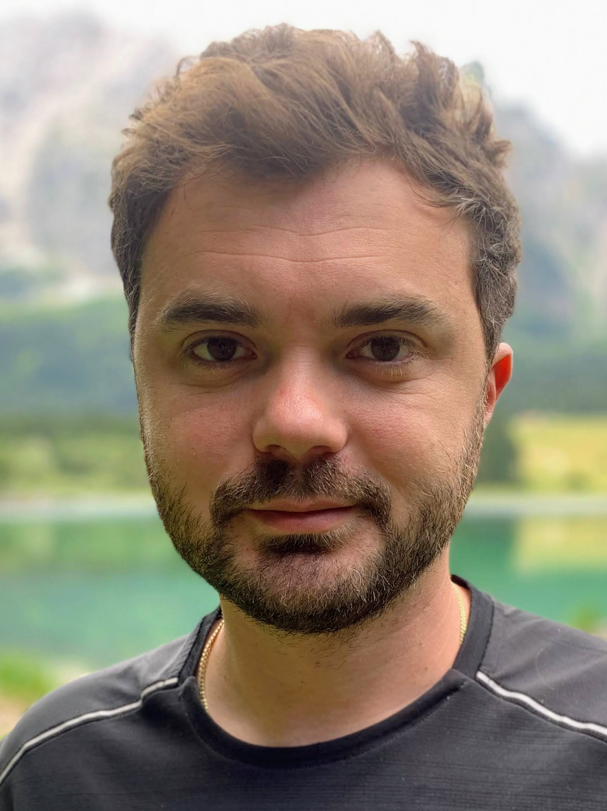
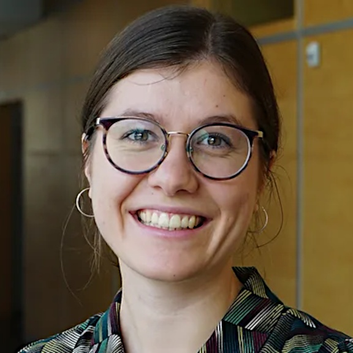

Research
Our group at the Heidelberg University and Heidelberg University Hospital focuses on problem driven development of AI/ML approaches to data exploration, hypothesis generation and computational scientific discovery to facilitate translational biomedicine from imaging, single-cell and spatial omics data.
We are affiliated with the Institute for Computational Biomedicine and the Translational Spatial Profiling Center at the Heidelberg University and Heidelberg University Hospital.
We are members of ELLIS (European Laboratory for Learning and Intelligent Systems), the Interdisciplinary center for scientific computing, and contribute to the Scientific Machine Learning initiative at the Heidelberg University.
We work at the intersection of AI and biomedicine to address a fundamental challenge in biology and medicine: understanding the principles governing tissue organization and plasticity. We develop interpretable, scalable machine learning and optimization approaches that turn the complexity of single-cell and spatial omics data into mechanistic insight and clinical prediction.
- We formalize spatial tissue organization by learning representations that integrate single-cell, spatial multiomics, and imaging data into a unified view of tissue architecture, establishing that the spatial arrangement of cells encodes disease state in ways that are structured, persistent, and clinically consequential.
- We model tissue plasticity as a structured dynamical process, reconstructing how spatial programs evolve across disease stages and under therapeutic pressure to generate mechanistic hypotheses about the principles of adaptation, immune evasion, and resistance.
- We link spatial organization to clinical outcomes by integrating molecular, spatial, and imaging layers into explainable frameworks that establish the molecular architecture of tissue as predictive of disease progression and therapeutic response, toward translation into clinical practice.
We value collaborations with clinical, experimental biology groups and groups working on the development of novel methods for the acquisition of single-cell spatial omics data. We welcome synergistic collaborations with computational groups towards the construction of more robust theoretical and computational frameworks for the analysis of all aspects of biomedical data and beyond.
People
Group Leader

Members


Leoni Zimmermann
PhD student
Alessandro Greco
Scientific programmer
Associated Members

Philipp Schäfer
PhD student
Robin Fallegger
PhD student

Chiara Schiller
PhD student
Francesco Ceccarelli
PhD student
Tools
The Multiview Intercellular SpaTial modeling framework (MISTy) is an explainable machine learning framework for knowledge extraction and analysis of single-cell, highly multiplexed, spatially resolved data. MISTy facilitates an in-depth understanding of intra- and intercellular relationships. MISTy is a flexible framework able to process a custom number of views describing a different spatial or functional context such as intracellular or broader tissue structure, cell-type composition, functional footprints or anatomical regions.
Kasumi is a method for the identification of spatially localized neighborhoods of intra- and intercellular relationships, persistent across samples and conditions. Kasumi learns compressed explainable representations of spatial omics samples while preserving relevant biological signals that are readily deployable for data exploration and hypothesis generation, facilitating translational tasks.
DOT is a method for transferring cell features from a reference single-cell RNA-seq data to spots/cells in spatial omics. It operates by optimizing a combination of multiple objectives using a Frank-Wolfe algorithm to produce a high quality transfer. Apart from transferring cell types/states to spatial omics, DOT can be used for transferring other relevant categorical or continuous features from one set of omics to another, such as estimating the expression of missing genes or transferring transcription factor/pathway activities.
TOAST (Topography-aware Optimal Alignment of Spatially-resolved Tissues), is a spatially aware Fused Gromov-Wasserstein (FGW) framework for intra-, intersample and temporal alignment of spatial omics data, which explicitly incorporates spatial constraints into the optimal transport objective. TOAST transfers annotations across aligned samples, recovers differentiation trajectories and maps single cells to spatial locations.
ContextFlow
Python package
Rathod et al. 2025 arXiv
ContextFlow is a context-aware flow matching framework for inferring structural tissue dynamics from longitudinal spatially resolved omics data. It integrates local tissue organization and ligand-receptor communication patterns into a transition plausibility matrix that regularizes the optimal transport objective. By embedding these contextual constraints, ContextFlow generates trajectories that are not only statistically consistent but also biologically meaningful, making it a generalizable framework for modeling spatiotemporal dynamics.
SpaCEy is an explainable graph neural network that uncovers organizational tissue patterns predictive of clinical outcomes. SpaCEy learns directly from molecular marker expression by modeling tissues as spatial graphs of cells and their interactions. Its embeddings capture intercellular relationships and molecular dependencies that enable accurate prediction of variables such as overall survival and disease progression. SpaCEy integrates a specialized explainer module that reveals recurring spatial patterns of cell organization and coordinated marker expression that are most relevant to the model's predictions, distilling compact protein marker sets plus spatial context for improved patient stratification.
Publications
Latest preprints
- Liñares-Blanco, J., Schäfer, P. S. L., Zimmermann, L., Ferreira, R. M., Toro-Dominguez, D., et al. A transcriptional patient map of systemic lupus erythematosus reveals disease-related multicellular immune programs conserved between blood and kidney. bioRxiv: 2026.04.28.721379 (2026).
- Injarabian, L., Reiche, N., Willenborg, S., Welcker, D., Bai, Y., et al. Modes of programmed macrophage cell death govern outcome of cutaneous wound healing. bioRxiv: 2026.03.19.712831 (2026).
- Fallegger, R., Gomez-Ochoa, S., Boys, C., Ramirez Flores, R., Tanevski, J., et al. Shared multicellular injury programs of acute and chronic kidney disease enable mechanistic patient stratification. medRxiv:2026.03.05.26347522 (2026).
- Rifaioglu, A. S., Ervin, E. H., Sarigun, A., Germen, D., Bodenmiller, B., et al. SpaCEy: Discovery of Functional Spatial Tissue Patterns by Association with Clinical Features Using Explainable Graph Neural Networks. bioRxiv:2025.12.12.693857 (2025).
- Rathod, S. S., Ceccarelli, F., Holden, S. B., Liò, P., Zhang, X., Tanevski, J. ContextFlow: Context-Aware Flow Matching For Trajectory Inference From Spatial Omics Data. arXiv:2510.02952 (2025).
- Vulliard, L., Glauner, T., Truxa, S., Cetin, M., Wu, Y.-L., et al. Robust multicellular programs dissect the complex tumor microenvironment and track disease progression in colorectal adenocarcinomas. arXiv:2510.05083 (2025).
- Lake, B. B., Melo Ferreira, R., Hansen, J., Menon, R., Basta, J., et al. Cellular and Spatial Drivers of Unresolved Injury and Functional Decline in the Human Kidney. bioRxiv:2025.09.26.678707 (2025).
Journal publications
- Ceccarelli, F., Liò, P., Saez-Rodriguez, J., Holden, S., Tanevski, J. Topography-aware optimal transport for alignment of spatial omics data. Cell Reports Methods, 6(4), 101373 (2026).
- Schiller, C., Ibarra-Arellano, M. A., Bestak, K., Tanevski, J., Schapiro, D. Comparison and Optimization of Cellular Neighbor Preference Methods for Quantitative Tissue Analysis. Nature Communications 17(1) (2026).
- Schäfer, P. S. L., Zimmermann, L., Burmedi, P. L., Walfisch, A., Goldenberg, N., et al. ParTIpy: A Scalable Framework for Archetypal Analysis and Pareto Task Inference. Molecular Systems Biology (2026).
- Yang, Y., Guo, J., Zhu, Y., Yue, J., Zhu, J., et al. HistoWAS: A Pathomics Framework for Large-Scale Feature-Wide Association Studies of Tissue Topology and Patient Outcomes. Electronic Imaging 38, 11 (2026).
- Wünnemann, F., Sicklinger, F., Bestak, K., Nimo, J., Thiemann, T., et al. Spatial multiomics of acute myocardial infarction reveals immune cell infiltration through the endocardium. Nature Cardiovascular Research 4, 1345–1362 (2025).
- Ritz, T., Tanevski, J., Baues, J., Loosen, S. H., Luedde, T., et al. Proteomic subtyping highlights tumor heterogeneity of human HCC. Virchows Archiv 487, 959–969 (2025).
- Kuehl, M., Okabayashi, Y, Wong, M. N., Gernhold, L, Gut, G., et al. Pathology-oriented multiplexing enables integrative disease mapping. Nature 644, 516–526 (2025).
- Tanevski, J., Vuillard, L., Ibarra-Arellano, M. A., Schapiro, D., Hartmann, F. J., Saez-Rodriguez, J. Learning tissue representation by identification of persistent local patterns in spatial omics data. Nature Communications 16, 4071 (2025).
- Rahimi, A., Vale-Silva, L.A., Faelth Savitski, M., Tanevski, J., Saez-Rodriguez, J. DOT: a flexible multi-objective optimization framework for transferring features across single-cell and spatial omics. Nature Communications 15, 4994 (2024).
- Dimitrov, D., Schäfer, P. S. L., Farr, E., Rodriguez-Mier, P., Lobentanzer, S., et al. LIANA+ provides an all-in-one framework for cell–cell communication inference. Nature Cell Biology 26, 1613–1622 (2024).
- Laury, A. R., Zheng, S., Aho, N., Fallegger, R., Hänninen, S., et al. Opening the black box: spatial transcriptomics and the relevance of AI-detected prognostic regions in high grade serous carcinoma. Modern Pathology 37(7):100508 (2024).
- Paton, V., Ramirez Flores, R. O., Gabor, A., Badia-I-Mompel, P., Tanevski, J., et al. Assessing the impact of transcriptomics data analysis pipelines on downstream functional enrichment results. Nucleic Acids Research 52(14), 8100–8111 (2024).
- Heumos, L., Schaar, A. C., Lance, C., Litinetskaya, A., Drost, F., et al. Best practices for single-cell analysis across modalities. Nature Reviews Genetics 24, 550–572 (2023).
- Tanevski, J., Ramirez Flores, R. O., Gabor, A., Schapiro, D., Saez-Rodriguez, J. Explainable multiview framework for dissecting spatial relationships from highly multiplexed data. Genome Biology 23, 97 (2022).
- Kuppe, C., Ramirez Flores, R. O., Li, Z., Hayat, S., Levinson, R. T., et al. Spatial multi-omic map of human myocardial infarction. Nature 608, 766–777 (2022).
- Gabor, A., Tognetti, M., Driessen, A., Tanevski, J., Guo, B., et al. Cell-to-cell and type-to-type heterogeneity of signaling networks: insights from the crowd. Molecular Systems Biology 17(10), e10402 (2021).
- Schwabenland, M., Salié, H., Tanevski, J., Killmer, S., Salvat Lago, M., et al. Deep spatial profiling of human COVID-19 brains reveals neuroinflammation with distinct microanatomical microglia-T-cell interactions. Immunity 54(7), 1594–1610.e11 (2021).
- Holland, C. H., Tanevski, J., Perales-Patón, J., Gleixner, J., Kumar, M. P., et al. Robustness and applicability of transcription factor and pathway analysis tools on single-cell RNA-seq data. Genome Biology 21, 36 (2020).
- Tanevski, J., Nguyen, T., Truong, B., Karaiskos, N., Ahsen, M. E. Gene selection for optimal prediction of cell position in tissues from single-cell transcriptomics data. Life Science Alliance 3(11), e202000867 (2020).
- Tanevski, J., Todorovski, L., Džeroski, S. Combinatorial search for selecting the structure of models of dynamical systems with equation discovery. Engineering Applications of Artificial Intelligence 89, 103423 (2020).
- Tanevski, J., Todorovski, L., Džeroski, S. Process-based design of dynamical biological systems. Scientific Reports 6, 34107 (2016).
- Tanevski, J., Todorovski, L., Džeroski, S. Learning stochastic process-based models of dynamical systems from knowledge and data. BMC Systems Biology 10, 30 (2016).
Positions
Interns/Master theses
We continiously offer opportunities for internships and supervision of master theses. We recommend that the duration of the internships is no shorter than three months.
PhD / Postdoc
There are currently no open PhD or Postdoc positions. Please check back soon for updates.
To apply please submit a letter of motivation tailored to the position (1 page), CV and a list of references with contact details (optional for Interns/Master) to contact<at>tanevskilab.org.
For all PhD and Postdoc postions we offer:
- Work contract and funding according to TV-L with all corresponding social benefits.
- Stimulating and supporting interdisciplinary research environment with access to international research networks.
- Access to state-of-the-art spatial omics and clinical data.
- Access to high performance computing infrastructure.
- Access to further training opportunities offered by the Heidelberg University and Heidelberg University Hospital.